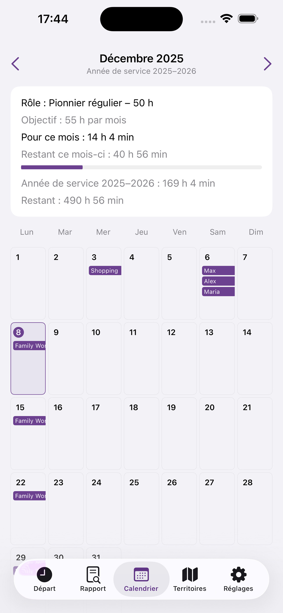
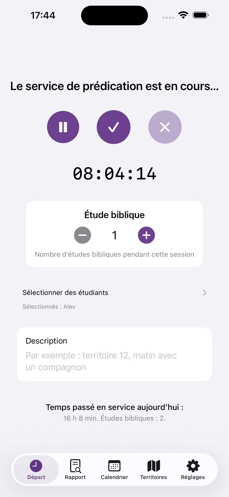
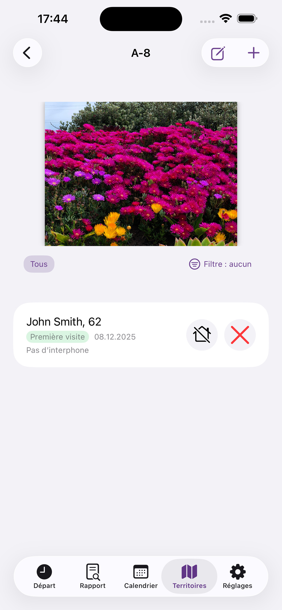
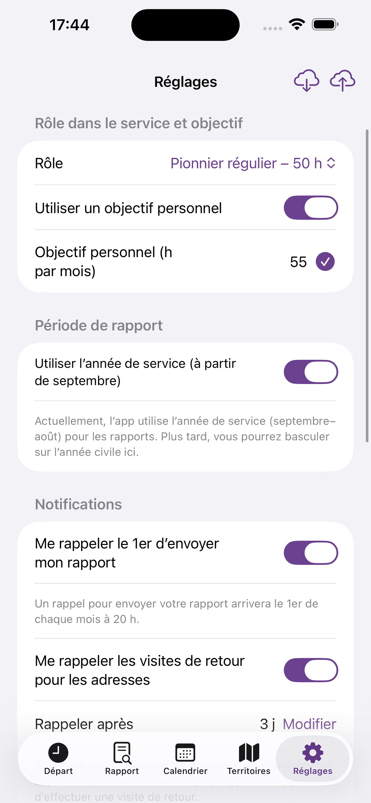
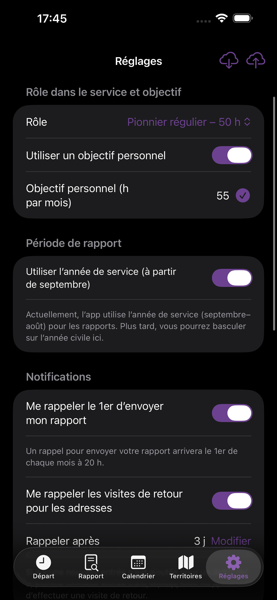

Votre compagnon complet pour la prédication et le service de pionnier
JW Ministry (Ministry Planner) réunit tout dans une application iOS privée : chronomètre de ministère avec Live Activities, suivi des cours bibliques, rapports par année de service, objectifs de pionnier et fiches de territoires.



Découvrez chaque écran de JW Ministry
Captures d'écran réelles de l'application en français — du chronomètre et des cours bibliques au calendrier de pionnier, aux territoires et au mode sombre OLED.




Tout ce qu'il vous faut pour organiser votre ministère
Conçu pour les proclamateurs, pionniers auxiliaires, permanents et spéciaux.
Chronomètre, Widgets & Dynamic Island
Lancez le minuteur depuis l'écran d'accueil ou de verrouillage et suivez-le en direct sur la Dynamic Island.
Suivi des cours bibliques
Associez vos étudiants à chaque entrée du rapport et gardez une trace précise de la leçon étudiée.
Objectifs de pionnier et cibles personnelles
Prend en charge les objectifs de 15, 30, 50, 90 et 100 heures ainsi qu'un objectif mensuel personnalisé.
Année de service (Sept.–Août) & Calendrier
Planifiez vos rendez-vous de prédication et le culte familial, et convertissez un plan en rapport d'un simple balayage.
Territoires, Immeubles & Rappels de visites
Gérez vos territoires avec photos, couleurs, recherche rapide et rappels automatiques de nouvelles visites.
Confidentialité 100 % locale & Sauvegarde iCloud
Aucun compte ni serveur externe. Toutes vos données restent sur votre iPhone/iPad.
Conçu pour chaque aspect de votre ministère du champ
Comment JW Ministry accompagne les proclamateurs, pionniers auxiliaires, permanents et spéciaux tout au long de l'année de service.
🎯 Pionniers Permanents et Spéciaux (50, 90 et 100 h / Année de service)
Suivez facilement votre objectif mensuel de 50 heures ainsi que les 600 heures de l'année de service de septembre à août. Définissez une cible personnelle (ex. 55 h/mois), planifiez vos journées dans le Calendrier et comparez le temps prévu avec le temps réellement prêché.
📅 Pionniers Auxiliaires (15 et 30 heures) et Proclamateurs
Lors des campagnes spéciales, de la visite du responsable de circonscription ou de la période du Mémorial, passez en mode Pionnier auxiliaire (15 h ou 30 h). Un rappel automatique le 1er du mois à 20h00 vous aide à ne jamais oublier votre rapport.
🏘️ Territoires de maison en maison, immeubles et nouvelles visites
Créez des fiches de territoires avec photos du plan, 10 couleurs au choix et un générateur d'appartements par bâtiments et étages. Notez les absents (« Pas à la maison »), recherchez rapidement une adresse ou un nom et recevez des rappels pour vos nouvelles visites.
📖 Cours bibliques et alternative moderne à ServicePlanner / MyTime
Suivez la progression de chaque étudiant dans le livre « Vivez pour toujours ! » (leçon et section). Compatible Dynamic Island, widgets iOS et mode sombre OLED sur iPhone et iPad.
🌍 Entièrement traduit dans plus de 35 langues
L'interface, les widgets et les notifications s'adaptent automatiquement à la langue de votre appareil :
Soutenir le développement de JW Ministry
JW Ministry est gratuite et sans abonnement. Si l'application vous aide dans votre ministère, vous pouvez soutenir les futures mises à jour iOS et la licence Apple Developer :
💳 Soutenir par Carte (International)
Don rapide via Boosty ou Patreon :
⚡ Crypto en direct (0 % de frais)
Transfert direct vers le portefeuille du développeur :
TQQxYhThQGngj887Lvq9TnKtyyYMcUDFNw
UQBNBroTUyMG0YqgiHGXwVKO_rKe5d2y7gXqvICREjBwuKYk
Questions fréquentes
Où sont stockés mes rapports et notes de territoires ?
Uniquement dans la mémoire interne de votre iPhone ou iPad. Aucune donnée n'est transmise à des serveurs externes.
Comment transférer mes données vers un nouvel iPhone ?
Dans l'onglet Réglages, touchez l'icône de nuage avec une flèche vers le haut pour exporter votre sauvegarde vers iCloud Drive, puis restaurez-la sur votre nouvel appareil.
Comment fonctionnent les rappels de nouvelles visites ?
Dans Réglages → Notifications, activez le rappel des nouvelles visites et choisissez le délai en jours avant d'être alerté.
L'année de service de septembre à août est-elle prise en charge ?
Oui, les rapports mensuels et le bilan annuel sont calculés selon l'année de service de septembre à août.
L'application fonctionne-t-elle sans connexion Internet en prédication ?
Oui, 100 % hors ligne. Toutes vos fiches de territoires, notes et minuteurs fonctionnent sans réseau mobile.
Puis-je convertir un rendez-vous planifié du Calendrier en entrée du Rapport ?
Oui, balayez simplement une session planifiée dans le Calendrier pour la transférer directement dans votre rapport mensuel.